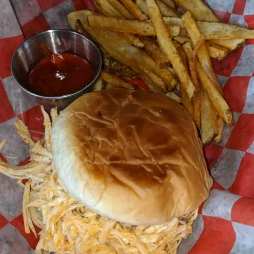

Mega panino della madonna strabuono rega
This crockpot Buffalo chicken is great for hearty sandwiches that will please those who love Buffalo chicken wings. This recipe is perfect for those days spent watching football. I like to top these with blue cheese or ranch dressing.
Ingredients
- 4 skinless, boneless chicken breast halves
- 1 (17.5 fluid ounce) bottle Buffalo wing sauce, divided
- ½ (1 ounce) package dry ranch salad dressing mix
- 2 tablespoons butter
- 6 hoagie rolls, split lengthwise
Steps
- Place chicken breasts into the slow cooker; pour in 3/4 of the wing sauce and ranch dressing mix
- Cover and cook on Low for 6 to 7 hours.
- Shred chicken in the cooker with two forks. Stir in butter.
- Pile shredded chicken and sauce onto hoagie rolls. Serve with remaining Buffalo sauce.